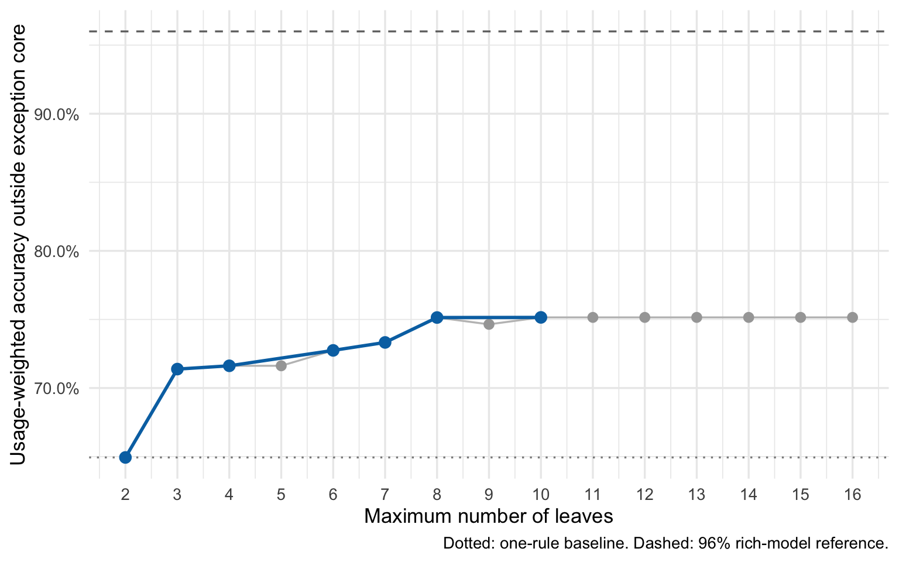
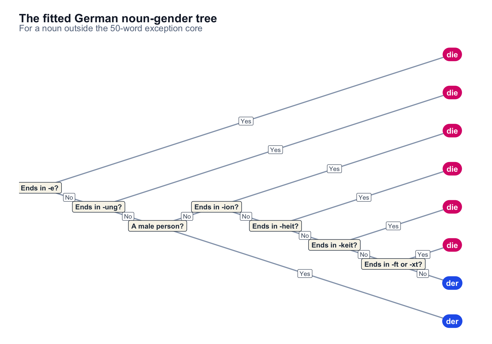

library(dplyr)
library(ggparty)
library(ggplot2)
library(knitr)
library(purrr)
library(readr)
library(rpart)
library(rsample)
library(scales)
library(stringr)
library(tibble)
library(tidyr)
theme_set(theme_minimal(base_size = 13))Accuracy is often said to be a poor metric for evaluating a classifier, especially in the presence of class imbalance: always predicting the most prevalent class will achieve accuracy equal to that class’s prevalence.
In many applications, the cost of a false positive also differs from that of a false negative; medical diagnosis is the standard example.
But there is a classification problem without severe class imbalance and with roughly symmetric errors. It has three classes, and it has haunted me since high school. I am talking, of course, about using the right gender for German nouns.
I gave up German in my final years of high school. Since then, I have relied on one heuristic: unless I am sure a noun is neuter, an ending in -e makes it feminine; otherwise, it is masculine. Let us see whether we can do better.
In short, we will end up with 50 words whose gender must be memorized and a decision tree for everything else. Together they achieve about 80% usage-weighted accuracy on subtitle data, our proxy for everyday speech.
Download the printable exception core and decision tree (PDF)
Before you ask: yes, this is a serious inquiry. And yes, it has been tackled before. Fedden et al. report about 96% accuracy from gradient-boosted decision trees using rich phonological, semantic, derivational, and inflectional information. We are never going to keep such a model in our heads, though. Instead, I want to find out how far one small tree can take us.
The analysis needs two core datasets:
- a German dictionary;
- a frequency distribution.
Evaluating uniformly against the dictionary would answer the wrong question. We want to know how often the rule fails in practical use, not while reciting the dictionary. For that, I use word frequencies from German movie and television subtitles as an approximation to everyday speech.
Two candidate rules also need a verb lexicon. For those I use the infinitive column from the Wiktionary-derived german-verbs-database.
For a fresh R installation, these are the required packages:
install.packages(c(
"dplyr", "ggparty", "ggplot2", "knitr", "purrr", "readr",
"rpart", "rsample", "scales", "stringr", "tibble", "tidyr"
))Download the dictionary and subtitle frequencies
The nouns come from the german-nouns export of German Wiktionary. Its CSV contains roughly 100,000 entries, including gender and inflected forms, and is published under CC BY-SA 4.0.
The frequency distribution comes from Matthias Buchmeier’s German subtitle frequency list. It was made from 25,399,099 words of movie and television subtitles. The list is split into pages of 5,000 entries; I use the first ten pages, covering the 50,000 most common words.
The following chunk downloads about 21 MB in total and caches the files in the project’s data directory.
data_dir <- "data"
dir.create(data_dir, showWarnings = FALSE)
noun_url <- paste0(
"https://raw.githubusercontent.com/gambolputty/german-nouns/",
"main/german_nouns/nouns.csv"
)
noun_path <- file.path(data_dir, "nouns.csv")
if (!file.exists(noun_path)) {
download.file(noun_url, noun_path, mode = "wb", quiet = TRUE)
}
verb_url <- paste0(
"https://raw.githubusercontent.com/viorelsfetea/",
"german-verbs-database/master/output/verbs.csv"
)
verb_path <- file.path(data_dir, "verbs.csv")
if (!file.exists(verb_path)) {
download.file(verb_url, verb_path, mode = "wb", quiet = TRUE)
}
starts <- seq(1, 45001, by = 5000)
ends <- starts + 4999
page_names <- sprintf("German_frequency_list-%d-%d", starts, ends)
subtitle_urls <- sprintf(
paste0(
"https://en.wiktionary.org/w/index.php?title=",
"User:Matthias_Buchmeier/%s&action=raw"
),
page_names
)
subtitle_paths <- file.path(data_dir, paste0(page_names, ".txt"))
walk2(subtitle_urls, subtitle_paths, function(url, path) {
if (!file.exists(path)) {
download.file(URLencode(url), path, mode = "wb", quiet = TRUE)
}
})Build a frequency-weighted noun dictionary
The dictionary includes affixes, proper names, phrases, and nouns with more than one possible gender. I keep ordinary one-word nouns whose Wiktionary record has exactly one gender.
gender_columns <- c("genus", paste("genus", 1:4))
nouns_raw <- read_csv(
noun_path,
col_types = cols(.default = col_character()),
show_col_types = FALSE
)
nouns <- nouns_raw |>
filter(
pos == "Substantiv",
str_detect(lemma, "^[A-ZÄÖÜ][[:alpha:]]+$")
) |>
select(lemma, all_of(gender_columns)) |>
pivot_longer(
cols = all_of(gender_columns),
names_to = NULL,
values_to = "gender"
) |>
filter(gender %in% c("m", "f", "n")) |>
distinct(lemma, gender) |>
add_count(lemma, name = "number_of_genders") |>
filter(number_of_genders == 1) |>
transmute(
lemma,
gender = factor(
recode(gender, m = "der", f = "die", n = "das"),
levels = c("der", "die", "das")
)
)
inflection_columns <- names(nouns_raw) |>
keep(
~ str_detect(
.x,
"^(nominativ|genitiv|dativ|akkusativ) (singular|plural)"
)
)
noun_forms <- nouns_raw |>
filter(pos == "Substantiv", lemma %in% nouns$lemma) |>
select(lemma, all_of(inflection_columns)) |>
pivot_longer(
-lemma,
names_to = "inflection",
values_to = "form",
values_drop_na = TRUE
) |>
filter(str_detect(form, "^[A-ZÄÖÜ][[:alpha:]]+$")) |>
select(lemma, form) |>
bind_rows(nouns |> transmute(lemma, form = lemma)) |>
distinct(lemma, form) |>
inner_join(nouns, by = "lemma") |>
group_by(form) |>
mutate(
is_headword = form == lemma,
has_headword = any(is_headword),
number_of_lemmas = n_distinct(lemma)
) |>
filter(
(has_headword & is_headword) |
(!has_headword & number_of_lemmas == 1)
) |>
select(lemma, form, gender) |>
ungroup()The dictionary also includes inflected forms, such as dative singulars and plurals. I reshape those columns into a surface-form-to-lemma map. Exact headwords take precedence; other spellings are discarded when they point to more than one lemma. Every retained form is therefore assigned to one canonical dictionary lemma; occurrences of Häuser, for example, contribute to Haus. Plural-only nouns remain under the lemma supplied by the dictionary.
The subtitle list has no part-of-speech tags, so a capitalized word is not necessarily a noun. For example, Ich at the start of a sentence should not be counted. A conservative heuristic is to keep a candidate only when its capitalized count is at least five times its lowercase count (or the lowercase spelling is absent). That retains Frau and Mädchen, whose lowercase occurrences are mostly noise, while rejecting Ich, Du, and Ist. It also loses genuinely ambiguous nouns such as Leben, but avoids assigning millions of pronoun and verb tokens to rare nouns.
There is one residual problem that a context-free frequency list cannot solve: some dictionary headwords are also overwhelmingly used as interjections or function words in subtitles. I exclude a short, explicit list of those homographs. This is intentionally auditable rather than a claim that Oh or Aber can never be used nominally. A stronger follow-up would estimate nominal use from POS-tagged subtitle sentences instead of assigning every occurrence of a spelling to its dictionary noun entry.
read_frequency_page <- function(path) {
lines <- read_lines(path, progress = FALSE)
opening_brackets <- str_locate(lines, fixed("[["))[, 1]
tibble(
frequency = parse_number(lines),
word = str_sub(lines, opening_brackets + 2L, -3L)
) |>
filter(
!is.na(frequency),
str_detect(word, "^[A-Za-zÄÖÜäöüß]+$")
)
}
subtitle_frequency <- subtitle_paths |>
map(read_frequency_page) |>
list_rbind()
lowercase_frequency <- subtitle_frequency |>
filter(word == str_to_lower(word, locale = "de")) |>
transmute(
lowercase_spelling = word,
lowercase_frequency = frequency
)
dominant_non_noun_uses <- c(
"Ach", "Ah", "Aha", "Äh", "Ähm", "Au", "Bah", "Buh", "Danke", "Hallo",
"He", "Hey", "Hi", "Hm", "Hmmm", "Ho", "Huch", "Hui", "Hurra", "Ja",
"Nein", "Oh", "Oha", "Okay", "Psst", "Tja", "Ups", "Wow",
"Aber", "Als", "Bitte", "Da", "Das", "Der", "Die", "Du", "Ein", "Er",
"Es", "Ich", "Ihr", "Ist", "Los", "Man", "Mit", "Nach", "Sie", "So",
"Und", "Vom", "Von", "Was", "Wer", "Wie", "Wir", "Zu"
)
capitalized_frequency <- subtitle_frequency |>
filter(str_detect(word, "^[A-ZÄÖÜ]")) |>
mutate(lowercase_spelling = str_to_lower(word, locale = "de")) |>
left_join(lowercase_frequency, by = "lowercase_spelling") |>
filter(
is.na(lowercase_frequency) |
frequency >= 5 * lowercase_frequency
)
excluded_surface_frequency <- capitalized_frequency |>
inner_join(noun_forms, by = c("word" = "form")) |>
filter(word %in% dominant_non_noun_uses)
noun_surface_frequency <- capitalized_frequency |>
filter(!word %in% dominant_non_noun_uses) |>
inner_join(noun_forms, by = c("word" = "form")) |>
transmute(
lemma,
gender,
form = word,
frequency
)
noun_frequency <- noun_surface_frequency |>
group_by(lemma, gender) |>
summarise(
frequency = sum(frequency),
matched_forms = n_distinct(form),
.groups = "drop"
) |>
arrange(desc(frequency))
stopifnot(
nrow(noun_forms) == n_distinct(noun_forms$form),
nrow(noun_frequency) == n_distinct(noun_frequency$lemma)
)
noun_data <- noun_frequency
tibble(
measure = c(
"noun lemmas",
"distinct inflected forms matched",
"matched subtitle tokens",
"explicitly excluded non-noun spellings"
),
value = c(
nrow(noun_data),
n_distinct(noun_surface_frequency$form),
sum(noun_data$frequency),
n_distinct(excluded_surface_frequency$word)
)
) |>
kable(format.args = list(big.mark = ","))| measure | value |
|---|---|
| noun lemmas | 10,406 |
| distinct inflected forms matched | 13,224 |
| matched subtitle tokens | 2,537,633 |
| explicitly excluded non-noun spellings | 5 |
The resulting noun_frequency table has one row per lemma. matched_forms makes the singular/plural aggregation visible rather than hiding it inside the join.
noun_frequency |>
select(lemma, gender, matched_forms, frequency) |>
slice_head(n = 12) |>
kable(
col.names = c("Lemma", "Gender", "Matched forms", "Frequency"),
format.args = list(big.mark = ","),
align = c("l", "l", "r", "r")
)| Lemma | Gender | Matched forms | Frequency |
|---|---|---|---|
| Mann | der | 6 | 43,862 |
| Zeit | die | 2 | 28,587 |
| Frau | die | 2 | 27,389 |
| Gott | der | 4 | 23,535 |
| Haus | das | 5 | 22,513 |
| Jahr | das | 4 | 22,205 |
| Freund | der | 4 | 19,392 |
| Kind | das | 4 | 19,155 |
| Vater | der | 4 | 18,187 |
| Geld | das | 3 | 16,507 |
| Sir | der | 1 | 15,562 |
| Mutter | die | 3 | 14,716 |
I report two scores. Type accuracy gives every dictionary entry one vote. Usage-weighted accuracy gives a noun with subtitle frequency \(f_i\) exactly \(f_i\) votes:
\[ \operatorname{accuracy}_{\mathrm{usage}} = \frac{\sum_i f_i\,\mathbb{1}(\hat y_i = y_i)}{\sum_i f_i}. \]
The second is the primary score because it better reflects how often a learner would actually need the rule. I will still report both so that a handful of very frequent words cannot silently define success.
Compare the gender distributions
Before fitting anything, it is useful to ask what the class balance looks like. Fedden et al. report two relevant reference distributions. Their cleaned database of 30,576 noun types is 36% masculine, 45% feminine, and 19% neuter (their Table 1). They also reproduce CELEX token counts of 35%, 42%, and 23%, respectively (their Table 3).
First, here is the comparison when every noun lemma gets one vote.
paper_type_distribution <- tribble(
~gender, ~paper_noun_types, ~paper_type_share,
"der", 10866, 0.36,
"die", 13766, 0.45,
"das", 5944, 0.19
) |>
mutate(gender = factor(gender, levels = c("der", "die", "das")))
type_distribution <- noun_data |>
count(gender, name = "our_noun_types") |>
mutate(our_type_share = our_noun_types / sum(our_noun_types)) |>
left_join(paper_type_distribution, by = "gender") |>
mutate(
gender = recode(
as.character(gender),
der = "Masculine (der)",
die = "Feminine (die)",
das = "Neuter (das)"
),
across(ends_with("share"), function(x) percent(x, accuracy = 0.1))
)
type_distribution |>
kable(
col.names = c(
"Gender", "Our noun types", "Our share",
"Paper noun types", "Paper share"
),
format.args = list(big.mark = ",")
)| Gender | Our noun types | Our share | Paper noun types | Paper share |
|---|---|---|---|---|
| Masculine (der) | 4,252 | 40.9% | 10,866 | 36.0% |
| Feminine (die) | 4,065 | 39.1% | 13,766 | 45.0% |
| Neuter (das) | 2,089 | 20.1% | 5,944 | 19.0% |
Next, each noun is weighted by the number of matched subtitle occurrences. The counts in the CELEX comparison are included for scale, although they come from a different corpus.
paper_token_distribution <- tribble(
~gender, ~celex_tokens, ~celex_token_share,
"der", 380770, 0.35,
"die", 447048, 0.42,
"das", 248147, 0.23
) |>
mutate(gender = factor(gender, levels = c("der", "die", "das")))
token_distribution <- noun_data |>
count(gender, wt = frequency, name = "subtitle_occurrences") |>
mutate(
subtitle_weighted_share = subtitle_occurrences /
sum(subtitle_occurrences)
) |>
left_join(paper_token_distribution, by = "gender") |>
mutate(
gender = recode(
as.character(gender),
der = "Masculine (der)",
die = "Feminine (die)",
das = "Neuter (das)"
),
across(ends_with("share"), function(x) percent(x, accuracy = 0.1))
)
token_distribution |>
kable(
col.names = c(
"Gender", "Matched subtitle occurrences", "Our weighted share",
"CELEX tokens", "CELEX share"
),
format.args = list(big.mark = ",")
)| Gender | Matched subtitle occurrences | Our weighted share | CELEX tokens | CELEX share |
|---|---|---|---|---|
| Masculine (der) | 1,007,487 | 39.7% | 380,770 | 35.0% |
| Feminine (die) | 976,315 | 38.5% | 447,048 | 42.0% |
| Neuter (das) | 553,831 | 21.8% | 248,147 | 23.0% |
Our subtitle-filtered sample is more masculine and less feminine than the paper’s database, under both counting schemes. That is not necessarily a contradiction: the authors’ main point in this part of the paper is that gender proportions depend on the corpus and the frequency range. Our counts cover dictionary forms that can be assigned to a single lemma after the spelling filters, rather than POS-tagged noun tokens, while the paper’s CELEX token row is not subtitle-based.
Memorize the costly exceptions
The rule is meant to help with unfamiliar nouns, not replace vocabulary a learner already knows. We all know that Mädchen is neuter even though it refers to a female person, and I assume that a student of German has internalized the genders of, say, the 50 most common nouns.
But there is no need to memorize a frequent noun if the compact tree already gets it right. In a preliminary pass, the tree correctly classified 51 of the original 100 most frequent nouns. I keep its 49 mistakes and add Telefon, the next most frequent mistake, to obtain a round 50-word exception core. The list is frozen before refitting the tree below.
core_lemmas <- c(
"Angst", "Arbeit", "Art", "Auge", "Auto",
"Baby", "Bett", "Bild", "Blut", "Buch",
"Ding", "Ende", "Frau", "Freundin", "Gefühl",
"Geld", "Gesicht", "Glück", "Hand", "Haus",
"Herz", "Jahr", "Junge", "Kind", "Land",
"Mama", "Miss", "Musik", "Mutter", "Mädchen",
"Nachricht", "Nacht", "Name", "Nummer", "Polizei",
"Problem", "Schiff", "Schuld", "Schwester", "Spiel",
"Stadt", "Telefon", "Tochter", "Tür", "Uhr",
"Wasser", "Welt", "Wort", "Zeit", "Zimmer"
)
core_vocabulary_size <- length(core_lemmas)
core_vocabulary <- noun_data |>
filter(lemma %in% core_lemmas)
stopifnot(
core_vocabulary_size == 50L,
nrow(core_vocabulary) == core_vocabulary_size,
setequal(core_vocabulary$lemma, core_lemmas)
)
rule_noun_data <- noun_data |>
anti_join(core_vocabulary, by = "lemma")
tibble(
vocabulary = c("Memorized exceptions", "Needs a rule"),
noun_lemmas = c(nrow(core_vocabulary), nrow(rule_noun_data)),
subtitle_tokens = c(
sum(core_vocabulary$frequency),
sum(rule_noun_data$frequency)
)
) |>
mutate(
token_share = subtitle_tokens / sum(subtitle_tokens),
token_share = percent(token_share, accuracy = 0.1)
) |>
kable(
col.names = c(
"Vocabulary", "Noun lemmas", "Subtitle tokens", "Token share"
),
format.args = list(big.mark = ",")
)| Vocabulary | Noun lemmas | Subtitle tokens | Token share |
|---|---|---|---|
| Memorized exceptions | 50 | 460,443 | 18.1% |
| Needs a rule | 10,356 | 2,077,190 | 81.9% |
All tree and baseline scores, as well as the error table below, are conditional on a noun falling outside this core. Later I also report a combined learner-system score that treats the memorized exceptions as correct.
Here is the complete exception core, alphabetized by noun. The article is part of each entry because that is what must be memorized.
core_rows_per_column <- ceiling(nrow(core_vocabulary) / 4)
core_vocabulary |>
arrange(str_to_lower(lemma, locale = "de")) |>
transmute(
entry = paste(gender, lemma),
position = row_number(),
row = (position - 1L) %% core_rows_per_column + 1L,
column = paste0("column_", (position - 1L) %/% core_rows_per_column + 1L)
) |>
select(row, column, entry) |>
pivot_wider(names_from = column, values_from = entry) |>
select(-row) |>
kable(
col.names = rep("Memorized exceptions", 4),
align = rep("l", 4)
)| Memorized exceptions | Memorized exceptions | Memorized exceptions | Memorized exceptions |
|---|---|---|---|
| die Angst | die Freundin | die Miss | das Spiel |
| die Arbeit | das Gefühl | die Musik | die Stadt |
| die Art | das Geld | die Mutter | das Telefon |
| das Auge | das Gesicht | das Mädchen | die Tochter |
| das Auto | das Glück | die Nachricht | die Tür |
| das Baby | die Hand | die Nacht | die Uhr |
| das Bett | das Haus | der Name | das Wasser |
| das Bild | das Herz | die Nummer | die Welt |
| das Blut | das Jahr | die Polizei | das Wort |
| das Buch | der Junge | das Problem | die Zeit |
| das Ding | das Kind | das Schiff | das Zimmer |
| das Ende | das Land | die Schuld | NA |
| die Frau | die Mama | die Schwester | NA |
Turn spelling into learnable questions
The spelling features are not arbitrary character fragments. They are a short, predeclared set of endings, beginnings, and word shapes that a learner could plausibly recognize. This is where I add the proposed rules for ge-, kn-, dr-, tr-, -ft, -xt, -ur, -et, and -ett. The tree is free to ignore rules that do not improve held-out predictions.
suffixes <- c(
e = "e", chen = "chen", lein = "lein", ung = "ung",
heit = "heit", keit = "keit", schaft = "schaft", ei = "ei",
ie = "ie", ik = "ik", ion = "ion", taet = "tät",
enz = "enz", anz = "anz", ur = "ur", `in` = "in", age = "age",
er = "er", en = "en", el = "el", ich = "ich", ig = "ig",
ling = "ling", ismus = "ismus", or = "or", us = "us",
ment = "ment", um = "um", ma = "ma", o = "o"
)
count_written_syllables <- function(words) {
words |>
str_to_lower(locale = "de") |>
str_replace_all("äu|au|ei|ai|eu|ie", "a_") |>
str_count("[aeiouyäöü]+")
}
make_spelling_features <- function(words) {
lowercase_words <- str_to_lower(words, locale = "de")
suffixes |>
map(~ str_ends(lowercase_words, fixed(.x))) |>
set_names(paste0("ends_", names(suffixes))) |>
as_tibble() |>
mutate(
starts_ge = str_starts(lowercase_words, fixed("ge")),
starts_kn = str_starts(lowercase_words, fixed("kn")),
starts_dr_or_tr = str_detect(lowercase_words, "^(dr|tr)"),
one_written_syllable = count_written_syllables(words) == 1,
ends_ft_or_xt = str_detect(lowercase_words, "(ft|xt)$"),
ends_et_or_ett = str_detect(lowercase_words, "(et|ett)$")
)
}one_written_syllable is necessarily an orthographic approximation. It counts vowel groups after collapsing common German diphthongs; it is useful for a toy learner’s rule, but it is not a phonetic syllabifier.
The remaining two rules need a verb lexicon. An exact infinitive spelling is a proxy for a nominalized infinitive, while an exact match to an infinitive with its final -en or -n removed is a proxy for a zero-derived verbal noun. These tests catch examples such as Essen and Kauf, but they also flag homographs such as Rasen. The classifier must decide whether the tendencies survive those exceptions.
verbs <- read_csv(
verb_path,
col_types = cols(.default = col_character()),
show_col_types = FALSE
) |>
transmute(
infinitive = str_to_lower(Infinitive, locale = "de")
) |>
filter(str_detect(infinitive, "^[a-zäöüß]+$")) |>
distinct()
verb_infinitives <- verbs$infinitive
verb_stems <- verbs |>
transmute(stem = str_remove(infinitive, "(?:en|n)$")) |>
filter(str_length(stem) >= 3) |>
distinct() |>
pull(stem)
make_verbal_features <- function(words) {
lowercase_words <- str_to_lower(words, locale = "de")
tibble(
is_infinitive = lowercase_words %in% verb_infinitives,
has_verbal_base = lowercase_words %in% verb_stems
)
}Add a small semantic layer
German also has semantic regularities. Weekdays, months, and the canonical seasons are masculine, for example. The IDS grammar also discusses regularities for people, directions, colours, and other classes, while stressing their exceptions and limited coverage.
The dictionary has no ontology, so I annotate a few small, auditable sets by hand. These flags describe meaning, not the answer. That distinction matters for words such as Mädchen: it denotes a female person, yet the diminutive ending makes the noun neuter.
weekdays <- c(
"Montag", "Dienstag", "Mittwoch", "Donnerstag", "Freitag",
"Samstag", "Sonnabend", "Sonntag"
)
months <- c(
"Januar", "Februar", "März", "April", "Mai", "Juni", "Juli",
"August", "September", "Oktober", "November", "Dezember"
)
seasons <- c("Frühling", "Sommer", "Herbst", "Winter")
directions <- c("Norden", "Süden", "Osten", "Westen")
colours <- c(
"Rot", "Blau", "Grün", "Gelb", "Schwarz", "Weiß", "Braun",
"Grau", "Rosa", "Violett"
)
female_people <- c(
"Frau", "Mutter", "Tochter", "Schwester", "Tante", "Oma",
"Großmutter", "Ehefrau", "Freundin", "Königin", "Prinzessin",
"Dame", "Braut", "Witwe", "Nonne", "Hebamme", "Mädchen",
"Fräulein"
)
male_people <- c(
"Mann", "Herr", "Vater", "Sohn", "Bruder", "Onkel", "Opa",
"Großvater", "Ehemann", "Freund", "König", "Prinz", "Kaiser",
"Bräutigam", "Witwer", "Mönch", "Junge", "Männchen"
)
semantic_sets <- list(
calendar = c(weekdays, months, seasons),
direction = directions,
colour = colours,
female = female_people,
male = male_people
)
model_data <- rule_noun_data |>
bind_cols(
make_spelling_features(rule_noun_data$lemma),
make_verbal_features(rule_noun_data$lemma)
) |>
mutate(
meaning_calendar = lemma %in% semantic_sets$calendar,
meaning_direction = lemma %in% semantic_sets$direction,
meaning_colour = lemma %in% semantic_sets$colour,
meaning_female = lemma %in% semantic_sets$female,
meaning_male = lemma %in% semantic_sets$male
)
feature_names <- c(
paste0("ends_", names(suffixes)),
"starts_ge", "starts_kn", "starts_dr_or_tr",
"one_written_syllable", "ends_ft_or_xt", "ends_et_or_ett",
"is_infinitive", "has_verbal_base",
"meaning_calendar", "meaning_direction", "meaning_colour",
"meaning_female", "meaning_male"
)
semantic_summary <- imap_dfr(semantic_sets, function(words, semantic_class) {
rows <- filter(model_data, lemma %in% words)
if (nrow(rows) == 0) {
return(tibble(
semantic_class,
nouns = 0L,
subtitle_tokens = 0,
majority_article = NA_character_,
weighted_purity = NA_real_
))
}
article_counts <- count(rows, gender, wt = frequency, name = "weight")
tibble(
semantic_class,
nouns = nrow(rows),
subtitle_tokens = sum(rows$frequency),
majority_article = as.character(
article_counts$gender[which.max(article_counts$weight)]
),
weighted_purity = max(article_counts$weight) / sum(article_counts$weight)
)
}) |>
filter(nouns > 0)
semantic_summary |>
mutate(weighted_purity = percent(weighted_purity, accuracy = 0.1)) |>
kable(
col.names = c(
"Semantic class", "Nouns", "Subtitle tokens", "Majority article",
"Weighted purity"
),
format.args = list(big.mark = ",")
)| Semantic class | Nouns | Subtitle tokens | Majority article | Weighted purity |
|---|---|---|---|---|
| calendar | 24 | 9,096 | der | 100.0% |
| direction | 4 | 2,759 | der | 100.0% |
| female | 11 | 12,379 | die | 90.0% |
| male | 17 | 126,645 | der | 99.9% |
This semantic annotation is intentionally small. An obvious extension would be to replace the hand-built lists with a reproducible ontology, while keeping the learner-facing feature names at this level of abstraction.
Check the added rules
Before allowing the tree to combine the new features, I can test each tendency on its own. “Usage-weighted hit rate” answers: among subtitle occurrences of nouns matching this rule, what proportion has the proposed article? It is a measure of a one-sided rule’s reliability, not the accuracy of a complete three-way classifier.
weighted_accuracy <- function(truth, estimate, weight) {
sum(weight * (truth == estimate)) / sum(weight)
}
added_rules <- tribble(
~feature, ~rule, ~predicted_article,
"starts_ge", "starts with ge-", "das",
"is_infinitive", "spelling is a verb infinitive", "das",
"has_verbal_base", "spelling matches a verb stem", "der",
"starts_kn", "starts with kn-", "der",
"one_written_syllable", "one written syllable", "der",
"starts_dr_or_tr", "starts with dr- or tr-", "der",
"ends_ft_or_xt", "ends with -ft or -xt", "die",
"ends_ur", "ends with -ur", "die",
"ends_et_or_ett", "ends with -et or -ett", "das"
)
rule_summary <- pmap_dfr(
added_rules,
function(feature, rule, predicted_article) {
matches <- model_data |>
filter(.data[[feature]])
tibble(
rule,
predicted_article,
noun_lemmas = nrow(matches),
subtitle_tokens = sum(matches$frequency),
type_hit_rate = mean(matches$gender == predicted_article),
usage_weighted_hit_rate = weighted_accuracy(
matches$gender,
factor(predicted_article, levels = levels(matches$gender)),
matches$frequency
)
)
}
)
rule_summary |>
mutate(
across(ends_with("hit_rate"), function(x) percent(x, accuracy = 0.1))
) |>
kable(
col.names = c(
"Rule", "Predicted article", "Noun lemmas", "Subtitle tokens",
"Type hit rate", "Usage-weighted hit rate"
),
format.args = list(big.mark = ",")
)| Rule | Predicted article | Noun lemmas | Subtitle tokens | Type hit rate | Usage-weighted hit rate |
|---|---|---|---|---|---|
| starts with ge- | das | 344 | 76,421 | 39.8% | 46.0% |
| spelling is a verb infinitive | das | 74 | 19,881 | 68.9% | 66.9% |
| spelling matches a verb stem | der | 576 | 278,386 | 72.4% | 77.5% |
| starts with kn- | der | 32 | 6,027 | 71.9% | 67.5% |
| one written syllable | der | 895 | 552,909 | 68.2% | 77.9% |
| starts with dr- or tr- | der | 168 | 27,748 | 53.0% | 57.9% |
| ends with -ft or -xt | die | 119 | 24,589 | 78.2% | 75.6% |
| ends with -ur | die | 70 | 11,608 | 71.4% | 78.1% |
| ends with -et or -ett | das | 76 | 8,846 | 78.9% | 60.0% |
These rows also make weak or corpus-sensitive rules visible. Nothing is forced into the final tree merely because it appeared on the candidate list.
Start with one rule
The opening classifier is the folk rule proposed at the start: if a noun ends in -e, predict die; otherwise predict der.
baseline_prediction <- factor(
if_else(model_data$ends_e, "die", "der"),
levels = levels(model_data$gender)
)
baseline_scores <- tibble(
model = "ends in -e → die; otherwise → der",
type_accuracy = mean(baseline_prediction == model_data$gender),
usage_weighted_accuracy = weighted_accuracy(
model_data$gender,
baseline_prediction,
model_data$frequency
)
)
baseline_scores |>
mutate(across(ends_with("accuracy"), function(x) percent(x, accuracy = 0.1))) |>
kable()| model | type_accuracy | usage_weighted_accuracy |
|---|---|---|
| ends in -e → die; otherwise → der | 54.9% | 64.9% |
Cross-validate trees of increasing size
To prevent the displayed result from being an in-sample score, I use vfold_cv() to create ten stratified resamples of the non-core lemmas. Every candidate tree is trained on the analysis portion of a split and predicts its assessment portion. The raw subtitle count is used as its case weight during training as well as in the primary evaluation metric.
I keep tree fitting and pruning explicit rather than wrapping the model in a larger tuning framework. The unusual constraint here is an exact ceiling on the number of leaves; the cost-complexity parameter used by rpart is only the mechanism for reaching each ceiling.
Tree size is measured in terminal leaves. I allow at most nine leaves for the eventual learner-facing tree, but fit budgets up to sixteen to show what extra complexity would buy.
set.seed(20260904)
cv_folds <- vfold_cv(model_data, v = 10, strata = gender)
tree_formula <- reformulate(feature_names, response = "gender")
grow_tree <- function(data) {
rpart(
tree_formula,
data = data,
weights = frequency,
method = "class",
model = TRUE,
parms = list(split = "information"),
control = rpart.control(
cp = 0,
minsplit = 30,
minbucket = 10,
maxdepth = 8,
maxcompete = 0,
maxsurrogate = 0,
usesurrogate = 0,
xval = 0
)
)
}
prune_to_budget <- function(tree, maximum_leaves) {
path <- as_tibble(tree$cptable)
selected <- path |>
filter(nsplit <= maximum_leaves - 1L) |>
slice_max(nsplit, n = 1, with_ties = FALSE)
prune(tree, cp = selected$CP)
}
leaf_budgets <- 2:16
cv_predictions <- map2(cv_folds$splits, cv_folds$id, function(split, fold_id) {
training <- analysis(split)
testing <- assessment(split)
grown_tree <- grow_tree(training)
leaf_budgets |>
map(function(budget) {
candidate <- prune_to_budget(grown_tree, budget)
prediction <- predict(candidate, testing, type = "class")
transmute(
testing,
fold = fold_id,
leaf_budget = budget,
actual_leaves = sum(candidate$frame$var == "<leaf>"),
lemma,
frequency,
truth = gender,
prediction
)
}) |>
list_rbind()
}) |>
list_rbind()
cv_summary <- cv_predictions |>
group_by(leaf_budget) |>
summarise(
actual_leaves = median(actual_leaves),
type_accuracy = mean(truth == prediction),
usage_weighted_accuracy = weighted_accuracy(
truth,
prediction,
frequency
),
.groups = "drop"
) |>
arrange(leaf_budget) |>
mutate(
previous_best = lag(cummax(usage_weighted_accuracy), default = -Inf),
on_frontier = usage_weighted_accuracy > previous_best
)Plot the accuracy–complexity frontier
We can now ask how much accuracy each additional leaf buys. The resulting Pareto frontier contains the tree budgets for which no smaller tree has equal or better usage-weighted accuracy. The horizontal 96% line is deliberately aspirational: it comes from the much richer model and different evaluation protocol of Fedden et al.
ggplot(cv_summary, aes(leaf_budget, usage_weighted_accuracy)) +
geom_hline(
yintercept = baseline_scores$usage_weighted_accuracy,
colour = "grey55",
linetype = "dotted"
) +
geom_hline(yintercept = 0.96, colour = "grey45", linetype = "dashed") +
geom_line(colour = "grey75") +
geom_point(colour = "grey65", size = 2.5) +
geom_line(
data = filter(cv_summary, on_frontier),
colour = "#0072B2",
linewidth = 1
) +
geom_point(
data = filter(cv_summary, on_frontier),
colour = "#0072B2",
size = 3
) +
scale_x_continuous(breaks = leaf_budgets) +
scale_y_continuous(labels = label_percent(accuracy = 0.1)) +
labs(
x = "Maximum number of leaves",
y = "Usage-weighted accuracy outside exception core",
caption = "Dotted: one-rule baseline. Dashed: 96% rich-model reference."
)
The two evaluation measures need not prefer the same tree. This table keeps that trade-off visible.
cv_summary |>
select(leaf_budget, actual_leaves, type_accuracy, usage_weighted_accuracy) |>
mutate(across(ends_with("accuracy"), function(x) percent(x, accuracy = 0.1))) |>
kable(
col.names = c(
"Leaf budget", "Median leaves", "Type accuracy",
"Usage-weighted accuracy"
)
)| Leaf budget | Median leaves | Type accuracy | Usage-weighted accuracy |
|---|---|---|---|
| 2 | 2 | 54.9% | 64.9% |
| 3 | 3 | 62.1% | 71.4% |
| 4 | 3 | 62.4% | 71.6% |
| 5 | 3 | 62.4% | 71.6% |
| 6 | 6 | 63.8% | 72.7% |
| 7 | 6 | 64.5% | 73.3% |
| 8 | 8 | 66.6% | 75.1% |
| 9 | 9 | 67.4% | 74.6% |
| 10 | 9 | 67.5% | 75.1% |
| 11 | 9 | 67.5% | 75.1% |
| 12 | 9 | 67.5% | 75.1% |
| 13 | 9 | 67.5% | 75.1% |
| 14 | 9 | 67.5% | 75.1% |
| 15 | 9 | 67.5% | 75.1% |
| 16 | 9 | 67.5% | 75.1% |
Choose and draw one learnable tree
I define “learnable” before looking at the answer: no more than nine leaves and no exact-word questions. Among those candidates I choose the smallest tree within 0.25 percentage points of the best usage-weighted score. The tolerance prevents a barely measurable gain from adding several more rules.
learnable_candidates <- cv_summary |>
filter(leaf_budget <= 9)
best_learnable_accuracy <- max(
learnable_candidates$usage_weighted_accuracy
)
chosen_budget <- learnable_candidates |>
filter(
usage_weighted_accuracy >= best_learnable_accuracy - 0.0025,
on_frontier
) |>
slice_min(leaf_budget, n = 1, with_ties = FALSE) |>
pull(leaf_budget)
full_tree <- grow_tree(model_data)
final_tree <- full_tree |>
prune_to_budget(chosen_budget)
chosen_tree_size <- cv_summary |>
filter(leaf_budget == chosen_budget) |>
transmute(
leaf_budget,
median_cv_leaves = actual_leaves,
final_tree_leaves = sum(final_tree$frame$var == "<leaf>")
)
chosen_tree_size |>
kable(
col.names = c(
"Leaf budget", "Median CV leaves", "Final tree leaves"
)
)| Leaf budget | Median CV leaves | Final tree leaves |
|---|---|---|
| 8 | 8 | 8 |
chosen_predictions <- cv_predictions |>
filter(leaf_budget == chosen_budget)
chosen_scores <- tibble(
evaluation = c(
"Tree on nouns outside the exception core",
"Exception core memorized plus tree"
),
type_accuracy = c(
mean(chosen_predictions$truth == chosen_predictions$prediction),
(
nrow(core_vocabulary) +
sum(chosen_predictions$truth == chosen_predictions$prediction)
) / nrow(noun_data)
),
usage_weighted_accuracy = c(
weighted_accuracy(
chosen_predictions$truth,
chosen_predictions$prediction,
chosen_predictions$frequency
),
(
sum(core_vocabulary$frequency) +
sum(
chosen_predictions$frequency *
(chosen_predictions$truth == chosen_predictions$prediction)
)
) / sum(noun_data$frequency)
)
)
chosen_scores |>
mutate(across(ends_with("accuracy"), function(x) percent(x, accuracy = 0.1))) |>
kable(
col.names = c(
"Evaluation", "Type accuracy", "Usage-weighted accuracy"
)
)| Evaluation | Type accuracy | Usage-weighted accuracy |
|---|---|---|
| Tree on nouns outside the exception core | 66.6% | 75.1% |
| Exception core memorized plus tree | 66.8% | 79.7% |
The leaf budget is a ceiling, not a promise. Cost-complexity pruning offers only the subtree sizes on the pruning path, so the tree fitted to all the data can have fewer leaves than the selected maximum. The table distinguishes its actual size from the median size seen in cross-validation.
question_by_feature <- c(
setNames(
sprintf("Ends in -%s?", unname(suffixes)),
paste0("ends_", names(suffixes))
),
starts_ge = "Starts with ge-?",
starts_kn = "Starts with kn-?",
starts_dr_or_tr = "Starts with dr- or tr-?",
one_written_syllable = "One written syllable?",
ends_ft_or_xt = "Ends in -ft or -xt?",
ends_et_or_ett = "Ends in -et or -ett?",
is_infinitive = "Also a verb infinitive?",
has_verbal_base = "Has a verbal base?",
meaning_calendar = "A day, month, or season?",
meaning_direction = "A compass direction?",
meaning_colour = "A colour?",
meaning_female = "A female person?",
meaning_male = "A male person?"
)
tree_frame <- final_tree$frame
article_levels <- levels(model_data$gender)
is_leaf <- function(node) {
tree_frame[as.character(node), "var"] == "<leaf>"
}
node_article <- function(node) {
article_levels[tree_frame[as.character(node), "yval"]]
}
# Logical predictors are stored by rpart as 0/1 numeric splits. The sign of
# ncat records whether TRUE goes left or right in the fitted tree.
internal_nodes <- row.names(tree_frame)[tree_frame$var != "<leaf>"]
split_direction <- setNames(
sign(final_tree$splits[, "ncat"]),
internal_nodes
)
stopifnot(all(final_tree$splits[, "index"] == 0.5))
decision_rows <- list()
current_node <- 1L
step <- 1L
repeat {
feature <- tree_frame[as.character(current_node), "var"]
left_node <- current_node * 2L
right_node <- left_node + 1L
true_goes_left <- split_direction[as.character(current_node)] > 0
true_node <- if (true_goes_left) left_node else right_node
false_node <- if (true_goes_left) right_node else left_node
# The selected pruned tree is a decision list: TRUE predicts immediately,
# while FALSE either asks the next question or reaches the default leaf.
stopifnot(!is_leaf(current_node), is_leaf(true_node))
decision_rows[[step]] <- tibble(
step,
feature,
question = unname(question_by_feature[feature]),
yes_article = node_article(true_node),
no_article = if (is_leaf(false_node)) node_article(false_node) else NA_character_
)
if (is_leaf(false_node)) {
break
}
current_node <- false_node
step <- step + 1L
}
raw_decision_list <- bind_rows(decision_rows)
collapse_with_or <- function(values) {
if (length(values) == 1L) {
return(values)
}
if (length(values) == 2L) {
return(paste(values, collapse = " or "))
}
paste0(paste(head(values, -1L), collapse = ", "), ", or ", tail(values, 1L))
}
ending_by_feature <- c(
setNames(paste0("-", unname(suffixes)), paste0("ends_", names(suffixes))),
ends_ft_or_xt = "-ft/-xt",
ends_et_or_ett = "-et/-ett"
)
combine_questions <- function(features, questions) {
if (all(features %in% names(ending_by_feature))) {
endings <- unname(ending_by_feature[features])
return(paste0("Ends in ", collapse_with_or(endings), "?"))
}
if (length(questions) == 1L) {
return(questions)
}
collapse_with_or(questions)
}
# Consecutive questions with the same Yes outcome are logically one OR rule.
# The printable handout uses this compressed form; the plot below deliberately
# shows the actual fitted tree.
decision_list <- raw_decision_list |>
mutate(
display_group = cumsum(
yes_article != lag(yes_article, default = first(yes_article))
)
) |>
group_by(display_group) |>
summarise(
step = min(step),
question = combine_questions(feature, question),
feature = paste(feature, collapse = "|"),
yes_article = first(yes_article),
no_article = if (any(!is.na(no_article))) {
first(na.omit(no_article))
} else {
NA_character_
},
.groups = "drop"
)
article_colours <- c(
der = "#2563EB",
die = "#DB2777",
das = "#D97706"
)
party_tree <- partykit::as.party(final_tree)
tree_plot <- ggparty(party_tree, horizontal = TRUE)
# as.party() numbers nodes in the same preorder used by rpart's frame. This lets
# us add learner-facing questions, articles, and Boolean edge labels while
# leaving ggparty responsible for the tree layout.
stopifnot(
nrow(tree_plot$data) == nrow(tree_frame),
all(tree_plot$data$id == seq_len(nrow(tree_frame)))
)
tree_plot$data <- tree_plot$data |>
mutate(
rpart_node = as.integer(row.names(tree_frame)),
parent_rpart_node = rpart_node[match(parent, id)],
true_goes_left = unname(
split_direction[as.character(parent_rpart_node)]
) > 0,
answer = case_when(
is.na(parent) ~ NA_character_,
(birth_order == 1L) == true_goes_left ~ "Yes",
.default = "No"
),
question = unname(question_by_feature[splitvar]),
article = article_levels[tree_frame$yval]
)
tree_plot +
geom_edge(colour = "#94A3B8", linewidth = 0.8) +
geom_edge_label(
aes(label = answer),
parse = FALSE,
fill = "white",
colour = "#475569",
label.size = 0,
size = 3.2
) +
geom_node_label(
aes(label = question),
ids = "inner",
fill = "#F8F4EA",
colour = "#243447",
label.size = 0.35,
label.padding = grid::unit(0.3, "lines"),
label.r = grid::unit(0.18, "lines"),
fontface = "bold",
size = 3.6
) +
geom_node_label(
aes(label = article, fill = article),
ids = "terminal",
colour = "white",
label.size = 0,
label.padding = grid::unit(0.4, "lines"),
label.r = grid::unit(0.7, "lines"),
fontface = "bold",
size = 4.1
) +
scale_fill_manual(values = article_colours, guide = "none") +
labs(
title = "The fitted German noun-gender tree",
subtitle = "For a noun outside the 50-word exception core"
) +
theme_void(base_size = 13) +
theme(
plot.title = element_text(face = "bold", colour = "#172033", size = 17),
plot.subtitle = element_text(colour = "#64748B", margin = margin(b = 12)),
plot.margin = margin(14, 28, 14, 28)
)
Feature names translate directly into questions: ends_chen means “does the word end in -chen?”, and meaning_calendar means “is it a weekday, month, or canonical season?” Likewise, is_infinitive asks whether the spelling occurs in the verb lexicon, and one_written_syllable uses the deliberately simple vowel-group approximation described above. The resulting tree is the object to evaluate from a learner’s perspective: are its rules memorable, and is the accuracy gain worth each additional branch?
One semantic feature now survives pruning: asking whether the noun denotes a male person. The other semantic sets do not buy as much predictive accuracy as the suffixes. A true linguistic generalization need not earn a place in a severely pruned predictive tree.
Of the nine newly added tendencies, the -ft/-xt rule does enter the final tree. The others remain useful learner-facing evidence in the individual-rule table, but do not clear the accuracy threshold under the nine-leaf ceiling.
The absence of a das leaf is not a plotting error. Under an objective that maximizes overall usage-weighted accuracy, the limited leaves are more profitably spent identifying feminine endings and using der as the fallback. That is an important failure mode of aggregate accuracy: if minimum performance on every gender matters, the fitting objective would need class weights or an explicit per-gender recall constraint.
Why does the tree have only one continuing branch?
This shape is usually called a decision list: both outcomes exist at every split, but one outcome receives an article immediately and only the other needs another question. The plot now shows every split in the fitted rpart object; the printable handout combines consecutive questions that have the same outcome. Read from the root, it says: endings in -e or -ung give die; otherwise a male person gives der; otherwise the endings -ion, -heit, -keit, -ft, and -xt give die; and the fallback is der.
rpart does not try to make a visually balanced tree. At each node it greedily chooses the split with the greatest information gain. Because most predictors here are sparse yes/no rules, a useful split tends to peel off a small, high-purity group while leaving a large mixed group for the next rule. The frequency weights make that behaviour stronger when the peeled-off nouns are common. Splitting the already pure side would buy little accuracy and can also run into the minsplit and minbucket requirements.
The larger full_tree shows that this is not a plotting constraint: before pruning it contains nodes whose two outcomes both lead to further questions. Cross-validation does not find the improvement from those splits large enough for the learner’s complexity budget, so cost-complexity pruning collapses them into leaves and gives the displayed tree its decision-list shape.
Inspect the costly mistakes
Accuracy hides which errors matter. The following table uses out-of-fold predictions and sorts mistakes by subtitle frequency, so it is also a practical study list for further exceptions. By construction, memorized words such as Frau, Mädchen, and Junge do not appear here.
cv_predictions |>
filter(leaf_budget == chosen_budget, truth != prediction) |>
arrange(desc(frequency)) |>
select(lemma, truth, prediction, frequency) |>
slice_head(n = 20) |>
kable(
col.names = c("Noun", "Correct article", "Predicted", "Frequency"),
format.args = list(big.mark = ",")
)| Noun | Correct article | Predicted | Frequency |
|---|---|---|---|
| Feuer | das | der | 3,648 |
| Kraft | die | der | 3,610 |
| Licht | das | der | 3,531 |
| Geschäft | das | die | 3,458 |
| Team | das | der | 3,416 |
| Wahl | die | der | 3,320 |
| Person | die | der | 3,314 |
| Büro | das | der | 3,312 |
| Zukunft | die | der | 3,278 |
| Krankenhaus | das | der | 3,152 |
| Bein | das | der | 3,101 |
| Haar | das | der | 3,071 |
| Arschloch | das | der | 3,008 |
| Party | die | der | 2,883 |
| Wiedersehen | das | der | 2,786 |
| Gefängnis | das | der | 2,753 |
| Zeug | das | der | 2,736 |
| Ziel | das | der | 2,670 |
| Geheimnis | das | der | 2,637 |
| Flugzeug | das | der | 2,595 |
What this experiment does not establish
This is a model of dictionary lemmas, not noun tokens in context. The conservative capitalization filter removes many ambiguous words. The frequency aggregation does include every recorded singular and plural form that maps unambiguously to a lemma, but the source still cannot tell a noun use from a sentence-initial homograph. Subtitle dialogue is closer to everyday speech than a dictionary’s uniform type distribution, but translated dialogue is not identical to spontaneous German conversation.
Apart from gender stratification, the folds are random at the lemma level. A stricter follow-up would put morphologically related nouns or shared compound heads in the same fold, preventing closely related formations from appearing in both training and assessment data. Other useful sensitivity checks would replace raw frequency with log1p(frequency), vary the 50-word exception budget or replace it with a CEFR-graded German lexicon, and expand the semantic annotations with a real ontology.
Most importantly, 96% is a benchmark for a much richer statistical model. The point of this post is to measure how much accuracy can be retained after imposing a severe human-memory budget.